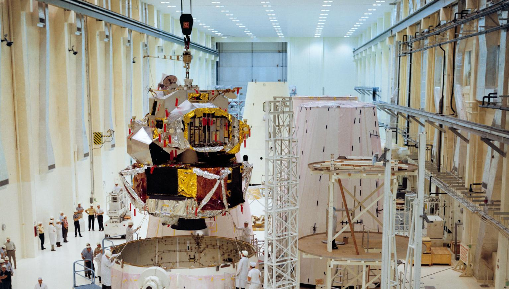

Apollo 5 was the first spaceflight of the Lunar Module, the specialized spacecraft designed to land astronauts on the Moon. Launched on January 22, 1968, the mission was uncrewed and focused entirely on testing the Lunar Module's systems and engines in the environment of space.
Unlike the Command Module, which carried astronauts to and from Earth, the Lunar Module was specifically designed for operations near the Moon. It consisted of two stages: a descent stage used for landing an ascent stage used to return astronauts to lunar orbit. Because this spacecraft would play a critical role in future Moon landings, NASA needed to ensure that it functioned correctly before placing astronauts board.
The primary objective of Apollo 5 was to test the Lunar Module's propulsion systems. Engineers wanted to verify that both the descent engine and ascent engine could operate reliably and perform the maneuvers required during a lunar landing mission.
NASA also planned to test emergency procedures that might be needed if problems occurred during a Moon landing. These tests would help determine whether astronauts could safely return to lunar orbit under difficult circumstances.
Apollo 5 was launched into Earth orbit aboard a Saturn IB rocket. Once in orbit, the Lunar Module separated from the launch vehicle and began a series of engine tests.
During the mission, engineers encountered some unexpected issues with the planned testing sequence. Certain maneuvers did not occur exactly as intended, requiring mission controllers to modify procedures while the spacecraft was in flight. Despite these challenges, the Lunar Module's engines performed successfully and provided valuable information.
The ascent engine, which would later be responsible for lifting astronauts off the Moon, fired successfully in space. This was a particularly important milestone because the engine would have no backup during an actual lunar mission.
Apollo 5 demonstrated that the Lunar Module's major systems worked in space. The mission proved that the spacecraft's engines could start, stop, and perform complex maneuvers while operating in orbit.
Although some planned tests were modified, engineers gathered enough data to confirm that the Lunar Module was capable of supporting future crewed missions. The successful flight increased confidence that the spacecraft could eventually carry astronauts to the Moon's surface.
Apollo 5 was a crucial step toward achieving a lunar landing. Without a successful Lunar Module, the entire Apollo strategy would have been impossible.
The mission helped identify minor issues that could be corrected before astronauts used the spacecraft. Its success paved the way for later missions such as Apollo 9, Apollo 10, and ultimately Apollo 11, where the Lunar Module would play a central role in making history.